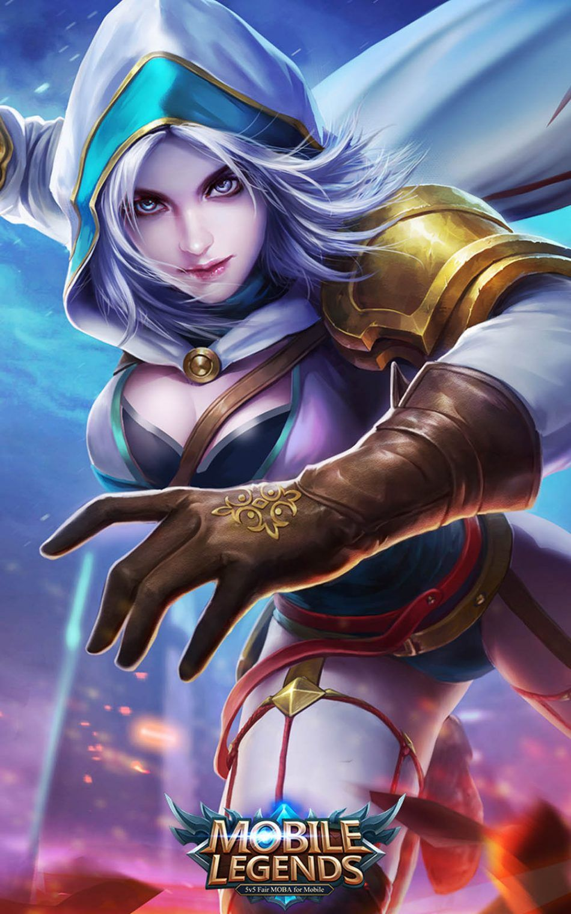
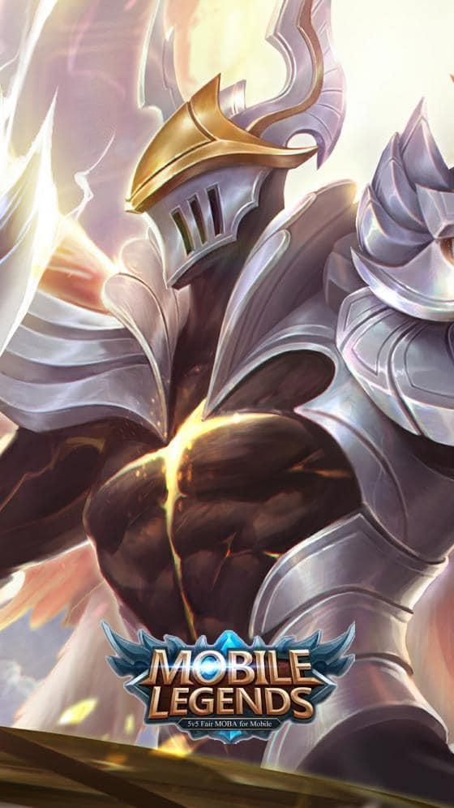
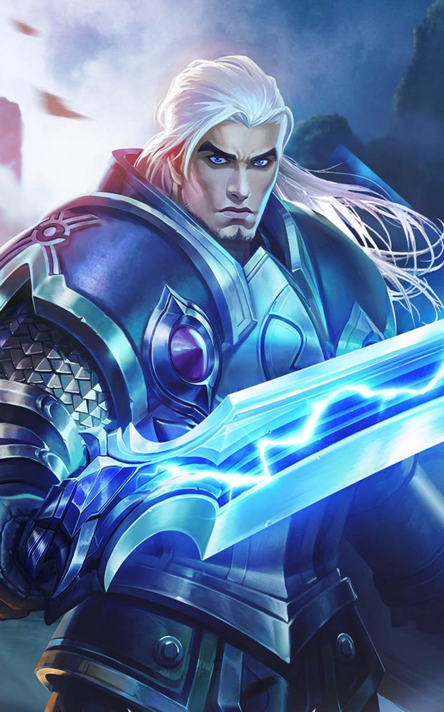

Mobile Legends: Bang Bang es uno de aquellos juegos estilo MOBA muy similar a títulos reconocidos como el League of Legends y el Heroes Of The Storm, es decir, un juego de ofensiva y defensiva. El objetivo principal del juego es llevar a tu ejército por los diferentes carriles, mientras se destruye cada torre que se cruce y que impida realizar el recorrido correspondiente hasta la base de nuestro interés.
La función principal de los asesinos es buscar el enemigo más fuerte y tenerlo como foco de ataques. Estos héroes poseen buena movilidad y habilidades letales, lo cual al momento de un ataque se les puede facilitar si sabemos usarlos. Son buenos en los ataques sorpresa cuando un enemigo se encuentre solo. Sus habilidades cuentan con altos tiempos de recarga.
La función de los Tiradores se basa en saberse posicionar y atacar a distancia, esto es de gran ayuda al momento de atacar torres enemigas o cuando ataquen a un compañero. Depende del héroe sus habilidades le pueden ayudar a una fácil movilidad, por ende buen escape, o hacer daño explosivo. Se dice que para mejor rendimiento el tirador va en compañía del tanque.
EL papel de los Combatientes se puede tornar algo multifacético, puesto que son buenos para ser usados en la jungla y pueden adaptarse a las necesidades del equipo. Ágiles en el enfrentamiento 1vs1.
El papel de los Tanques en las partidas es proteger a su equipo, ya que ellos son los Héroes que más daño aguantan, cuentan con habilidades y un soporte de vida con el que pueden llevar a cabo su rol. Cuentan con buen manejo de control de masas, por ende pueden ser hábiles al momento de despejar las líneas.
La función de los Magos se basa en el daño mágico, por ende deben comprar un buen equipamiento que potencie su poder mágico. Estos héroes atacan de lejos, por eso al momento del combate se recomienda que se coloquen detrás de héroes que lo puedan proteger para así poder cumplir su función. Se le recomienda un buen manejo de sus habilidades ya que gasta mucho maná.
La función principal de los Apoyo es ser soporte y brindarle ayuda a los demás Héroes.
Algunos de estos héroes ayudan en el Control de Masas.
Los Apoyo pueden brindar escudos, protección y curar a sus compañeros en el campo de batalla.
Usualmente, el rol de jungla es una buena mezcla entre ser soporte y ser asesino.
Puedes hacer mucho daño por tu cuenta, así que potencialmente podrás obtener muchas
rachas de eliminaciones, pero tu objetivo será ayudar a tu equipo a obtener
eliminaciones para que éstos puedan ganar sus carriles.
Antes de empezar a jugar, asegúrate de elegir el hechizo de Retribución en la pantalla
de selección de héroes. Este hechizo te ayudará a destruir los enemigos de la jungla.
Sin éste, verás que es mucho más difícil de levelear en la jungla, y te quedarás atrás
con respecto a los demás jugadores.
Luego, deberás elegir un buen héroe para la jungla. Tu elección acá es importante ya
que podrías irte por un héroe móvil, o uno más tanque pero lento. Si te vas por los
héroes más móviles, podrás hacer más daño y será mas fácil gankear, pero te morirás más
rápido también. Los héroes más tanques son robustos y tendrán más oportunidades para iniciar
team fights, pero gankear será más difícil ya que no te podrás acercar rápidamente al enemigo.
Lo bueno es que tendrás más salud y defensas con estos últimos.